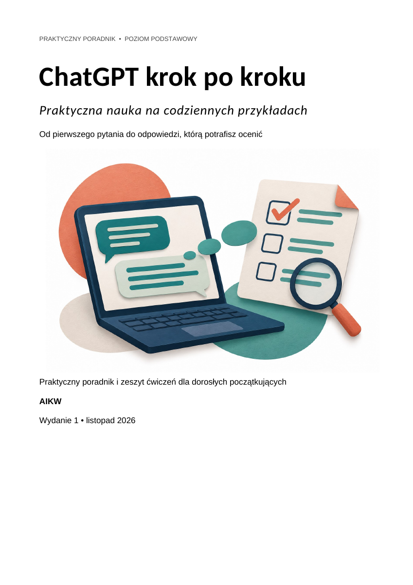

Pierwsza rozmowa
Poznaj podstawy, napisz jasne polecenie i naucz się poprawiać nietrafiony wynik.
Od pierwszego pytania do odpowiedzi, którą potrafisz ocenić. Poznaj ChatGPT na codziennych przykładach i zacznij korzystać z niego z większą pewnością.

01 / ZACZNIJ TUTAJ
Patrzysz na puste pole rozmowy i nie wiesz, co wpisać? A może dostajesz odpowiedź, ale trudno Ci ocenić, czy jest poprawna?
Ten poradnik przeprowadzi Cię przez oba momenty. Bez informatycznego żargonu — za to z przykładami, które możesz przećwiczyć we własnym tempie.
Poznaj poradnik →02 / CO ZNAJDZIESZ W ŚRODKU
Wiedza ma sens, kiedy można ją wykorzystać. Dlatego obok wyjaśnień znajdziesz polecenia, ćwiczenia i sposoby kontroli wyników.
Poznaj podstawy, napisz jasne polecenie i naucz się poprawiać nietrafiony wynik.
Porównuj odpowiedzi ze źródłami i dowiedz się, jak ostrożnie podchodzić do swoich danych.
Ćwicz tworzenie wiadomości, planów i notatek oraz wykorzystanie ChatGPT do nauki i pracy.
Korzystaj z szablonów, planu siedmiu dni, kart pracy, ściągi i słownika pojęć.
03 / PRAKTYCZNIE, NIE NA SKRÓTY
Zamiast zbierać pojedyncze porady z różnych miejsc, przejdź uporządkowaną ścieżkę: od prostego pytania, przez poprawki, aż po samodzielne sprawdzenie odpowiedzi.
04 / DLA KOGO
Ten poradnik jest dla dorosłych osób początkujących — także tych, które nie mają wiedzy informatycznej.
05 / TWOJA KOLEJ
Praktyczny poradnik i zeszyt ćwiczeń, do którego możesz wracać wtedy, kiedy go potrzebujesz.
Zakup odbywa się na platformie Naffy. Szczegóły dostępu do produktu znajdziesz na stronie zakupu.
06 / WARTO WIEDZIEĆ
Oto kilka odpowiedzi na dobry początek.
Poradnik ma format PDF. Możesz go otworzyć w przeglądarce lub aplikacji obsługującej pliki PDF.
Tak, pliki PDF można czytać na telefonie za pomocą przeglądarki lub czytnika PDF.
Tak. Jest przeznaczony dla dorosłych osób początkujących i nie wymaga wiedzy informatycznej.
Zakup obsługuje Naffy. Informacje o dostępie i warunkach zakupu sprawdź na stronie produktu przed opłaceniem zamówienia.
Poradnik zaleca rozpoczęcie od prostych zadań tekstowych dostępnych na Twoim koncie. Funkcje i limity mogą się różnić; ćwiczenia z plikami i obrazami mają wariant bez załączników.